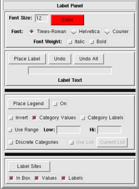

NVIZ Reference Manual
CONTENTS
Label Panel
The Label panel lets you place labels and/or legends
in the NVIZ viewer.
-

OPTIONS
On the Label panel, the first (top) menu has options for
setting the font attributes for both the labels and the legend.
- Font Size
- Sets the Font size in points.
- Color
- Sets the text color.
- Font
- Select from one of three font styles.
- Times-Roman
- Sets the font style to Times Roman.
- Helvetica
- Sets the font style to Helvetica.
- Courier
- Sets the font style to Courier.
- Font Weight
-
- Bold
- Sets the font weight to bold.
- Italics
- Sets the font weight to italics.
Use the next menu in the Label panel to place labels in
the NVIZ viewer.
- Place Label
- Places the text from Label Text in the
NVIZ viewer using the current font attributes. You click in
the NVIZ viewer to place the label.
- Undo
- Removes the previously defined label from the display list. The label
disappears when the NVIZ viewer scene redraws.
- Undo All
- Removes all labels from the display list.
- Label Text
- Enter the text string for the label.
Use the next menu in the Label panel to place a surface
(raster) legend in the NVIZ viewer.
- Place Legend
- Places the legend for the current surface (see
Surface Panel) in the
NVIZ viewer using the current font attributes.
To define the legend size, you click in the NVIZ viewer
at the first corner of the legend and right click at the adjacent corner.
If the defined box is wider than it is high a horizontal legend is drawn.
- On
- Activates the automatic redrawing of the legend. If turned off, the
legend is not redrawn.
- Invert
- Draws the legend inverted (if selected).
- Category Values
- Uses the surface category values as legend labels (if selected).
- Category Labels
- Uses the surface category labels as legend labels (if selected).
- Use Range
- Uses the defined minimum and maximum when drawing the legend (if selected).
- Low
- Sets the minimum value of the legend.
- Hi
- Sets the maximum value of the legend.
- Discrete Categories
- Draws the legend with discrete color breaks.
- Use List
- This option is not yet implemented.
Use the next menu in the Label panel to draw sites file
labels in the NVIZ viewer. This menu is not yet implemented.
- Label Sites
- This option is not yet implemented.
- In Box
- This option is not yet implemented.
- Values
- This option is not yet implemented.
- Labels
- This option is not yet implemented.